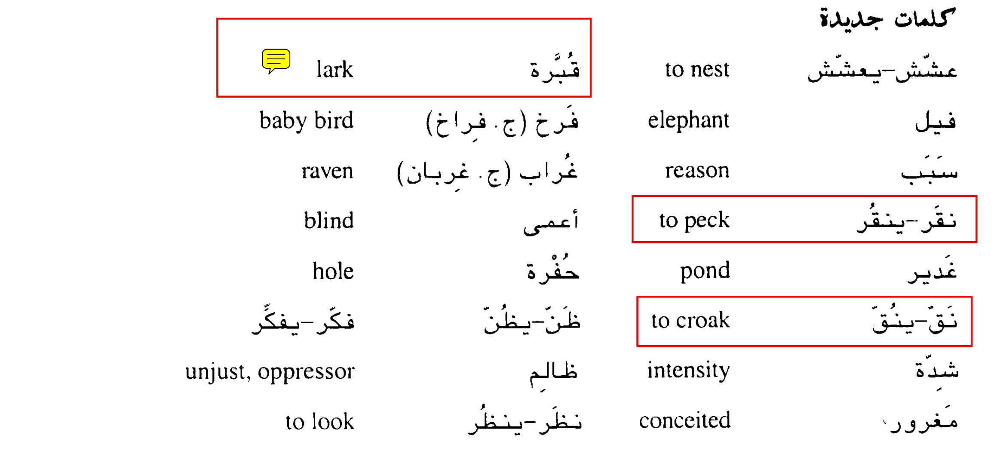

القبرة والفيل
The Lark and the Elephant
عششت قبرة على طريق الفيل ، فمر
الفيل في يوم من الايام و مشى على العش و كسر البيض وقتل الفراخ التي
فيه . فلما رأت القبرة ما حدث لبيضها عرفت ان الفيل هو الذي كسره فطارت و
وقفت على راسه وهي تبكي وقالت أيها الفيل العظيم لماذا كسرت بيضي وقتلت فراخي
وانا جارتك هل فعلت ذلك لأنك قوي وانا ضعيفة قال الفيل نعم هذا هو السبب .
تركته القبرة وذهبت الى الطيور الاخرى واخبرتها بما حدث فسألتها الطيور وماذا
نقدر أن نعمل للانتقام من الفيل ونحن طيور ضعيفة فطلبت من الغربان أن تنقر
عيني الفيل فذهبت الغربان و نقرت عينيه وصار اعمى لا يرى طريقه إلى مأكله
ومشربه .
ثم ذهبت إلى غدير فيه ضفادع كثيرة واخبرتها بما فعل الفيل ببيضها،
وطلبت منها ان تذهب الى حفرة كبيرة و تنق فيها بصوت عالي حتى يسمعه
الفيل و يظن أن في الحفرة ماء ويذهب ليشرب. فذهبت الضفادع وتجمعت الحفرة
وبدأت ننق.
عندما سمع الفيل نقيقها ذهب الى الحفرة من شدة العطش فوقع فيها
وتكسر.ثم جاءت القبرة ووقفت على راسه وقالت له أيها الظالم المغرور لقد
احتقرتني وقلت فراخي اعتقدت انني ضعيفة ولا اقدر على الانتقام منك انظر الى
حالك الآن!
